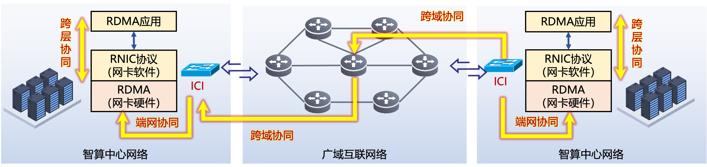
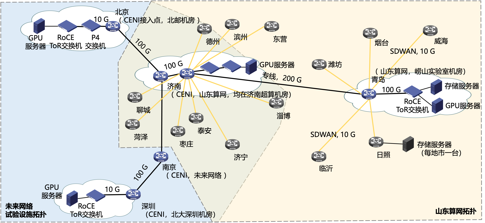

01
研究背景
BACKGROUND随着以大模型为代表的计算模式突破和以ChatGPT为代表的典型应用落地，人工智能计算（简称智算）已经成为支撑科学发现、技术创新和社会发展的新兴计算范式。以"超高吞吐、超低延迟、长距传输"为典型特征的智算网络成为支撑人工智能发展的重要基础设施，其中，RDMA是构建短距智算网络的关键技术选型。然而，在长距智算网络中，由于广域大时滞网络特征导致端到端控制回路滞后低效、广域大规模复杂通信场景导致拥塞状态刻画难度陡增、广域大范围存量异构基础设施导致应用传输质量受限等原因，现有短距传输控制技术体系难以满足广域RDMA传输需求。因此，亟待开展广域RDMA传输控制技术研究，有力支撑分布式智算发展。
02
研究目标与关键科学问题
OBJECTIVES本项目面向广域RDMA传输场景下的拥塞检测、拥塞控制和公平吞吐等典型需求紧密围绕新型RDMA广域传输控制的三项关键科学问题：（1）多层次多维度传输协同控制机理、（2）拥塞扩散演化规律与精准检测机制、（3）公平吞吐相互作用关系及其实现原理，重点突破四项关键技术：（1）广域RDMA多维协同传输控制架构、（2）广域RDMA网络拥塞精准定位技术、（3）广域RDMA拥塞感知精准控制算法、（4）广域智算网络传输增强协议研发与应用验证。
03
技术路线
APPROACH本项目技术路线以"协同控制架构+拥塞建模理解+拥塞精准控制"为核心创新思路，从"拥塞定位+拥塞控制+公平控制+原型系统"四方面开展研究。具体地，首先针对现有拥塞控制架构难以适应广域长距网络的问题，设计跨域协同的广域拥塞控制架构，研究跨层协同的流量准入控制和端网协同的丢失恢复控制架构；其次，研究网络拥塞精准定位方法，理论建模拥塞时间演化及空间扩散机理，设计高效低损拥塞时空检测及根因诊断方法；然后，设计基于拥塞根因的吞吐公平控制算法，实现多流多路径下的延迟感知连接迁移和公平区分服务。最后，研制广域智算网络传输增强系统，集成广域RDMA拥塞检测及控制协议，完成典型应用场景及流量模式测试验证。项目由北京邮电大学牵头，联合香港中文大学（深圳）、山东省计算中心（国家超级计算济南中心）合作研究。

04
预期成果
EXPECTED OUTCOMES本项目预期构建"拥塞精准定位+拥塞协同控制+公平高效传输"为特色的新型广域RDMA传输技术体系，开展全域跨18地、距离大于3000公里的大规模真实网络环境下的大语言模型广域联合训练、遥感数据长距汇交、政务视频数据智能分析推理、大文件数据备份等为代表的3种典型应用验证。

05